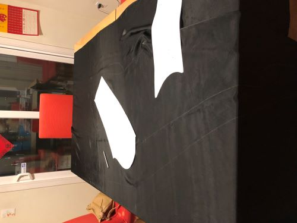
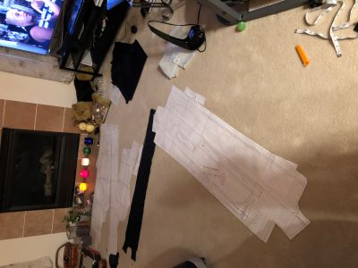
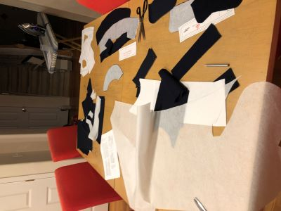
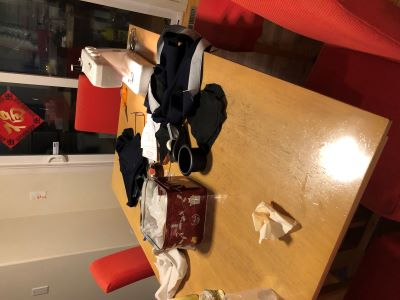
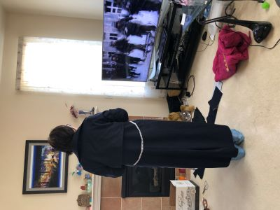

Home, WA
Finally finished！！！
My parents left a few pieces of high-grade cashmere wool fabric. I always felt that it was a pity to throw them away. But I didn't know what to do with them. Finally, I decided to make this coat. I started working in January. Finally, last night I finished it and had all the buttons fixed. It's officially finished!
I'm very happy! üòÄ That's why I wear a high-grade cashmere wool coat in the summerüòú
  
 
×